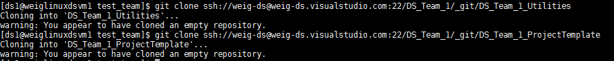
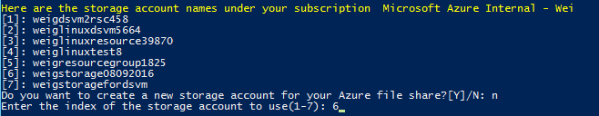

After finishing this tutorial, team lead will complete these tasks:
- Create your team project on the group VSTS server
- Create TeamProjectTemplate and TeamUtilities repositories under your team project
- Seed TeamProjectTemplate from GroupProjectTemplate repository, and customize TeamUtilities repository
- Create team data and analytics resources
- Mount team file shares to add data assets
- Add team members and security control
Azure file shares can be used to share data resources that might be useful for the projects that your team might be carrying out. For instance, if your team is a demand forecasting team, some publicly available data such as stock indices and Purchasing Manager Index (PMI) might be useful data resources. A good feature of Azure file share is that it can be mounted to multiple Azure virtual machines just like a local disk. Any change made on the file share can be immediately visible to all virtual machines that the file share is mounted to.
Dictionary of names used in this instruction.
R1 : The GroupProjectTemplate repository on Git you are going to set up on your VSTS group server.R2 : The GroupUtilities repository on Git you are going to set up on your VSTS group server.R3 : The TeamProjectTemplate repository on Git you are going to set up on your VSTS group server.R4 : The TeamUtilities repository on Git you are going to setup on your VSTS group server.D1 and D2 : The local directories on your machine that you are going to clone R1 and R2 to, respectively.D3 and D4 : The local directories on your machine that you are going to clone R3 and R4 to, respectively.[AZURE.NOTE] For small data science group that might not have multiple data science teams, or even larger data science group with multiple data science teams but wants to get convenience on inter-team collaboration, and/or group-level sprint planning, the entire group can choose to create a single team project, and all projects from all data science teams each has a single repository under this single team project. If this fits your needs better than each data science team having an individual team project, your entire data science group can designate a git administrator to follow this instruction to create a single team project.
If some teams would like to have team-specific project templates, or team-specific utilities, the team leads or delegates should create team project template repositories and/or team utilities repositories under the same team project. You can name these repositories as <TeamName>ProjectTemplate and <TeamName>Utilities, for instance, TeamJohnProjectTemplate and TeamJohnUtilities. Then, the team leads need to let their team members know which template and utilities repositories to adopt when they are setting up and cloning the project and utilities repositories.
Then, all project leads should follow the project lead instructions to create project repositories under this single team project.
If any of these two privileges has not been completed, please reach out to your group manager or his/her delegate to set it up by following the instructions.
 - After the team project MyTeam is created, click Nagivate to project button, you will be directed to the home page of your team project. If you see a Congratulations! popup window, click the button Add code (in red box). Otherwise, click Code (in yellow box). You will be directed to the Git repository page of your team project.
- After the team project MyTeam is created, click Nagivate to project button, you will be directed to the home page of your team project. If you see a Congratulations! popup window, click the button Add code (in red box). Otherwise, click Code (in yellow box). You will be directed to the Git repository page of your team project.


On the Git repository page of your team project, click the downward arrow beside repository name MyTeam, and select Manage repositories....

On the Version control tab of the control panel of your team project, click MyTeam, then select Rename repository.... Input a new name to the repository, in this example, MyTeamProjectTemplate. You can choose something like <Your team name>ProjectTemplate. Click Rename to continue.


Now you should be able to see two repositories created under your team project MyTeam.

In this step, you initiate your team ProjectTemplate repository (R3) from your GroupProjectTemplate (R1). If you want to customize your ProjectTemplate repository to meet your specific needs, this is the time for you to customize it.
Windows
git clone https://<Your VSTS Server name>.visualstudio.com/GroupCommon/_git/GroupProjectTemplate
git clone https://<Your VSTS Server name>.visualstudio.com/GroupCommon/_git/GroupUtilities
Linux
git clone ssh://<Your VSTS Server name>@<Your VSTS Server name>.visualstudio.com:22/GroupCommon/_git/GroupProjectTemplate
git clone ssh://<Your VSTS Server name>@<Your VSTS Server name>.visualstudio.com:22/GroupCommon/_git/GroupUtilities
Windows
git clone https://<Your VSTS Server name>.visualstudio.com/<Your Team Name>/_git/MyTeamProjectTemplate
git clone https://<Your VSTS Server name>.visualstudio.com/<Your Team Name>/_git/MyTeamUtilities
Linux
git clone ssh://<Your VSTS Server name>@<Your VSTS Server name>.visualstudio.com:22/<Your Team Name>/_git/MyTeamProjectTemplate
git clone ssh://<Your VSTS Server name>@<Your VSTS Server name>.visualstudio.com:22/<Your Team Name>/_git/MyTeamUtilities

Run the following shell scripts in PowerShell commandline (Windows), or Linux shell, depending on the operating system. You will be prompted to provide the paths to the source directory D1 and to the destination directory D3.
Windows
wget "https://raw.githubusercontent.com/Azure/Azure-MachineLearning-DataScience/master/Misc/TDSP/tdsp_local_copy_win.ps1" -outfile "tdsp_local_copy_win.ps1"
.\tdsp_local_copy_win.ps1 2
Linux DSVM
wget "https://raw.githubusercontent.com/Azure/Azure-MachineLearning-DataScience/master/Misc/TDSP/tdsp_local_copy_linux.sh"
bash tdsp_local_copy_linux.sh 2

If you want to customize the contents in D3 to meet the specific needs of your team, now it is the time to do so. You can modify the template documents, or change the directory structure.
If your team has developed some utilities that you want to share with your entire team, copy and paste these utilities into directory D4.
Now, you need to add the contents in D3 and D4 to repositories R3 and R4. Here are the git bash commands you can run in both Windows PowerShell or Linux.
Enter the directory GitRepos\MyTeam\MyTeamProjectTemplate, run the following commands.
git status
git add .
git commit -m"push from DSVM"
git push

You can see that in your group's VSO server, in the MyTeamProjectTemplate repository, the files are synced instantly.

Changing directory to GitRepos\MyTeam\MyTeamUtilities, run the same set of four git commands.
[Azure Note] If this is the first time you commit to a Git repository, you will be asked to provide your name and email address. Please use the same name and email address when you commit to these two repositories. Using the same name and email address will provide convenience when later on you build PowerBI dashboard to track your Git activities on multiple repositories.

You might want to create some data and/or analytics resources to share with your entire team so that they can execute the projects on the shared resources, save on budgets, and get efficiency. In this section, we just provide instructions on how to create and mount Azure file storage. For other resources like Azure Data Science Virtual Machines, Azure HDInsight Spark Clusters, etc, please refer to Azure Data and Analytics Resources, which provides you some guidance on selecting the right resources for your needs, and links to product pages and some useful tutorials we have published.
Requirements on creating and mounting Azure file storage. The resource group, storage account, and the Azure VM (e.g., DSVM) have to be in the same Azure data center.
Run the following scripts to create Azure file share for your team. Azure file share for your team can be used to store data assets that can be useful for your entire team.
When you run the shell scripts, you will be prompted to type in your Azure account and Azure subscription information.
Windows
wget "https://raw.githubusercontent.com/Azure/Azure-MachineLearning-DataScience/master/Misc/TDSP/CreateFileShare.ps1" -outfile "CreateFileShare.ps1"
.\CreateFileShare.ps1
Log in to your Microsoft Azure account when prompted:

Select the Azure subscription you want to use:
Under your selected subscription, you can select which storage account to use or create a new one:

Enter the name of the file share services to create, only lower case characters, numbers and - are accepted:
After the file service is created, you can save the file share information for later use when you mount it to Azure Virtual machines:

Linux
wget "https://raw.githubusercontent.com/Azure/Azure-MachineLearning-DataScience/master/Misc/TDSP/CreateFileShare.sh"
bash CreateFileShare.sh
Log in to your Microsoft Azure account following the instructions on screen:
Select the Azure subscription you want to use:
Under your selected subscription, you can select which storage account to use or create a new one:

Enter the name of the file share services to create, only lower case characters, numbers and - are accepted:

After the file service is created, you can save the file share information for later use when you mount it to Azure Virtual machines:
After file share is created succesfully, it can be mounted to your local machine using the following scripts.
Windows
wget "https://raw.githubusercontent.com/Azure/Azure-MachineLearning-DataScience/master/Misc/TDSP/AttachFileShare.ps1" -outfile "AttachFileShare.ps1"
.\AttachFileShare.ps1
The subscriptions under your Azure account will be listed and you will be asked if you have a file share information file, type in the file name we created in previous step, if you do not have a file share information file, you can still type in the required information following the instruction on the screen:
Then you will be asked to enter the name of the drive to be added to your virtual machine, which should be different from the ones that are already in your virtual machine:

You will find that a new drive (F drive) is successfully mounted to your machine.

If you do not have a file share information to use, you can follow the instructions on screen to to type in required subscription, storage account, and file share service information to attach file share to your machine:

You need to type in your subscription name, select storage account where file share is created and type in the file share name:

After you type in the name of drive to be added to your virtual machine, which should be different from the current ones, the file share will attached to your machine:
Now your file share is successfully mounted to your machine.
Linux
wget "https://raw.githubusercontent.com/Azure/Azure-MachineLearning-DataScience/master/Misc/TDSP/AttachFileShare.sh"
bash AttachFileShare.sh

You will be asked if you have a file containing the file share information, type in the name of file to retrieve required account, subscription and storage account information, if you do not have a such file, you can type in them following the instruction on screen:
Then you will be asked to enter the name of the drive to be added to your virtual machine, which should be different from the ones that are already in your virtual machine:

You will find that a new drive (mounted on fs0823) is successfully mounted to your machine.

If you do not have a file containing the file share information, below are the steps to follow:
Type in the subscription name where the file share is created:

Select the storage account under your subscription and type in the file share name:

Enter the name of drive to be added to your machine, which should be different from the existing ones:

You will see that the new file share (mounted on fileshare0823) is succefssfully mounted to your virtual machine.
From your team VSTS server's homepage, click the gear icon next to your user name in the upper right corner, then click Security, you may add members to your team with different permissions. More details please refer to Security Control section in Tools.